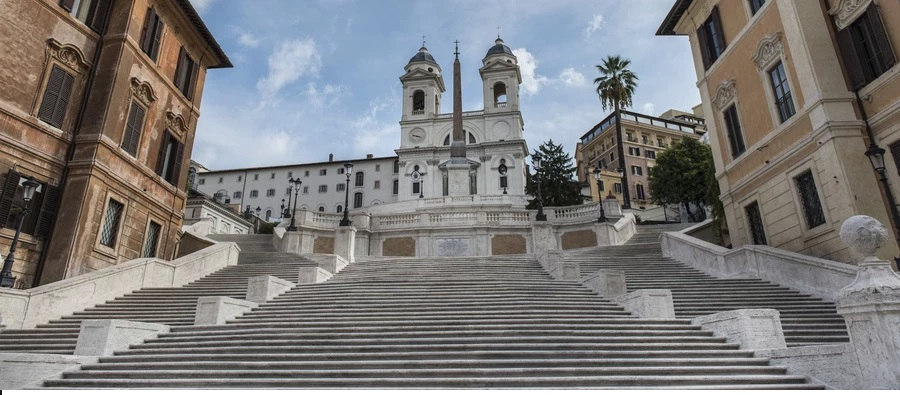

Schody Hiszpańskie
Schody Hiszpańskie to scenograficzne schody zbudowane w stylu rokokowym w latach 1723 – 1725, według projektu Francesca de Sanctisa i Alessandra Specchiego. Schody uroczyście poświęcił ówczesny papież, Benedykt XIII. Schody zaczynają się przy Piazza di Spagna i prowadzą ku XVI-wiecznemu kościołowi Trinita dei Monti, poświęconemu Trójcy Świętej.
Fundatorem Schodów Hiszpańskich był Francuz, Etienne Gueffier, jednak swoją nazwę zawdzięczają Ambasadzie Hiszpańskiej, która w momencie powstawania konstrukcji znajdowała się w usytuowanym obok Pałacu Mondaleschi. Warto nadmienić, że nazwa ta funkcjonuje na całym świecie, ale Włosi schody nazywają Scalinata di Trinità dei Monti, od nazwy kościoła, do którego prowadzą. Schody Hiszpańskie mają 138 stopni, przez co są drugimi (po Schodach Potiomkinowskich w Odessie) najszerszymi i najdłuższymi schodami na świecie. Od 2006 roku opiekę nad nimi sprawują Monastyczne Wspólnoty Jerozolimskie.
Schody Hiszpańskie to miejsce spotkań Włochów i odpoczynku turystów. Co ciekawe z obiektem tym wiąże się kilka przesądów. Pierwszy mówi, że nie powinno się tam jeść, ponieważ może to przynieść nieszczęście. Inny zaś zakłada, że radość i powodzenie w życiu można sobie zapewnić, robiąc zdjęcie na Schodach Hiszpańskich ze spuszczoną głową. Corocznie na Schodach Hiszpańskich odbywa się Festa della Primavera, czyli rzymski festiwal kwiatów. Zimą ustawiana tu jest szopka bożonarodzeniowa. Schody Hiszpańskie to także doskonała sceneria dla pokazów mody, które tu odbywają się dość często.
Schody Hiszpańskie znajdują się w rione (dzielnicy) Campo Marzio, czyli centrum Rzymu. W pobliżu znajduje się stacja metra „Spagna”, przy której zatrzymują się pociągi linii A. Poza tym pod Schody Hiszpańskie można dojechać autobusem numer 117 na przystanek o takiej samej nazwie co stacja.
